📖
السلاسل والشبكات الغذائية وهرم الطاقة
الفصل الخامس: الأنظمة البيئية · الصفحات ١٣٦ – ١٤٣
❓ السؤال الأساسيكيف تنتقل الطاقة بين المخلوقات الحية في النظام البيئي؟
💡 الزبدة⚖️ انتبهي للفرق🔍 توضيح⚠️ فخ في الاختبار✍️ حلّ سؤال الكتاب
في كل بطاقة فكرة واحدة: اقرئي فقرة الكتاب ثم حاشيتها، ثم اسحبي إلى البطاقة التالية 👈
أنظر وأتساءل
الأسماك الصغيرة غذاء للدلافين، فعلامَ تتغذى الأسماك الصغيرة؟
✍️ الجوابفكّري ثم اضغطي
تتغذى على مخلوقات حية أصغر منها تعيش في الماء، مثل العوالق. وهذا أول خيط في السلسلة الغذائية التي سنتعلمها.
📝 مفردات الدرس
السلسلة الغذائيةمسار انتقال الطاقة في الغذاء من مخلوق حي إلى آخر.
المُنتِجمخلوق حي يصنع غذاءه بنفسه.
المُستهلِكمخلوق حي لا يصنع غذاءه، فيتغذى على مخلوقات أخرى.
المُحلِّليحلل بقايا المخلوقات الميتة إلى مواد أبسط.
الشبكة الغذائيةمجموعة سلاسل غذائية متداخلة في نظام بيئي.
الحيوان القارتيتغذى على النباتات والحيوانات معًا.
الحيوان المفترسيصطاد حيوانات أخرى ويقتلها ليتغذى عليها.
الحيوان الكانسيتغذى على بقايا الحيوانات الميتة، ولا يصطاد.
هرم الطاقةنموذج يبيّن كيف تنتقل الطاقة خلال سلسلة غذائية.
ص١٣٨ · ما السلاسل الغذائية؟
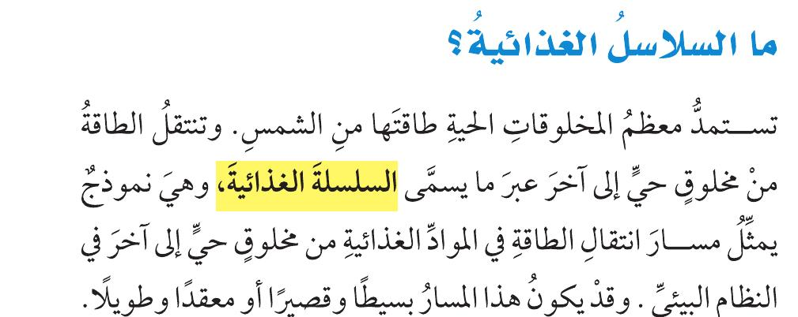
💡 الزبدة
السلسلة الغذائية طريقٌ تمشي فيه الطاقة من مخلوق إلى آخر عن طريق الغذاء.
تبدأ دائمًا بمُنتِج، ومصدر طاقتها الأول الشمس ☀️.
تبدأ دائمًا بمُنتِج، ومصدر طاقتها الأول الشمس ☀️.
ص١٣٨ · ما السلاسل الغذائية؟

🔍 توضيح
المُنتِج يصنع غذاءه بعملية البناء الضوئي، ويُطلق الأكسجين.
يستعمل بعض الغذاء، ويخزّن الباقي في الأوراق والسيقان والجذور، فتأكله المخلوقات الأخرى وتأخذ طاقته.
يستعمل بعض الغذاء، ويخزّن الباقي في الأوراق والسيقان والجذور، فتأكله المخلوقات الأخرى وتأخذ طاقته.
ص١٣٨ · ما السلاسل الغذائية؟

⚖️ انتبهي للفرق
| على اليابسة | في البحار والمحيطات |
|---|---|
| المنتجات الرئيسة: النباتات 🌿 | المنتجات: الطحالب والعوالق النباتية 🌊 |
ص١٣٨ · ما السلاسل الغذائية؟

⚠️ فخ في الاختبار
ليست كل المنتجات تحتاج ضوء الشمس! بعض البكتيريا في قاع المحيط تصنع غذاءها من مواد كيميائية.
ص١٣٨ · ما السلاسل الغذائية؟

⚠️ فخ في الاختبار
الفطر 🍄 ينمو مثل النبات، لكنه ليس مُنتِجًا؛ فهو لا يصنع غذاءه.
الفطريات مُحلِّلات.
الفطريات مُحلِّلات.
ص١٣٩ · المستهلكات والمحللات

💡 الزبدة
المُستهلِك لا يصنع غذاءه، فيأكل المنتجات أو مستهلكات أخرى.
ص١٣٩ · المستهلكات والمحللات
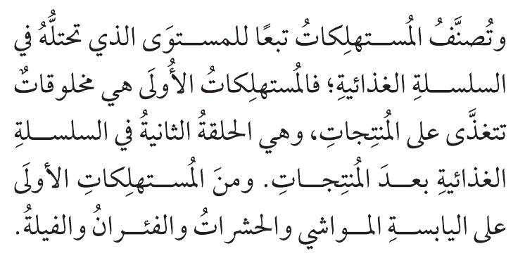
🔍 توضيح: ترتيب الحلقات
منتج←مستهلك أول←مستهلك ثانٍ←مستهلك ثالث
• الأول يأكل المنتجات: المواشي، الحشرات، الفئران، الفيلة.• الثاني يأكل المستهلك الأول: طيور تأكل الحشرات.
• الثالث يأكل المستهلك الثاني: الأفعى تأكل الطير.
ص١٣٩ · المستهلكات والمحللات

⚖️ انتبهي للفرق
| العوالق النباتية | العوالق الحيوانية |
|---|---|
| منتجات تصنع غذاءها | مستهلكات أولى تبتلع الغذاء |
ص١٣٩ · المستهلكات والمحللات
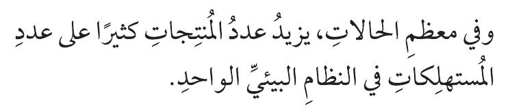
💡 الزبدة
عدد المنتجات في النظام البيئي أكبر بكثير من عدد المستهلكات.
ص١٣٩ · المستهلكات والمحللات
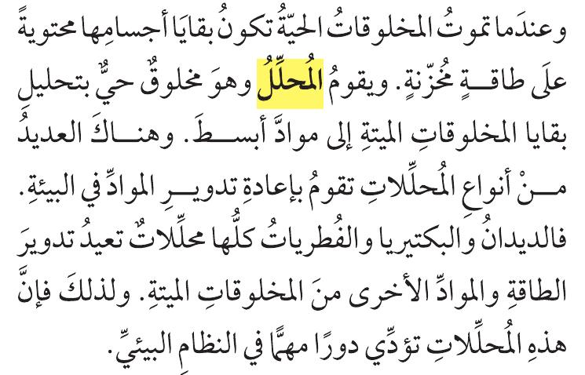
🔍 توضيح
المُحلِّل يحلل بقايا المخلوقات الميتة إلى مواد أبسط، فيُعيد تدوير المواد في البيئة ♻️.
أمثلته في الكتاب: الديدان والبكتيريا والفطريات.
أمثلته في الكتاب: الديدان والبكتيريا والفطريات.
ص١٣٩ · المستهلكات والمحللات

✍️ حلّ «أختبر نفسي»اضغطي لتري الإجابة
أتتبع: لأنها تعيد تدوير الطاقة والمواد من المخلوقات الميتة إلى البيئة.
التفكير الناقد: الإنسان مستهلك؛ فهو مستهلك أول حين يأكل النباتات، ومستهلك في مستوى أعلى حين يأكل اللحوم.
التفكير الناقد: الإنسان مستهلك؛ فهو مستهلك أول حين يأكل النباتات، ومستهلك في مستوى أعلى حين يأكل اللحوم.
ص١٣٩ · المستهلكات والمحللات

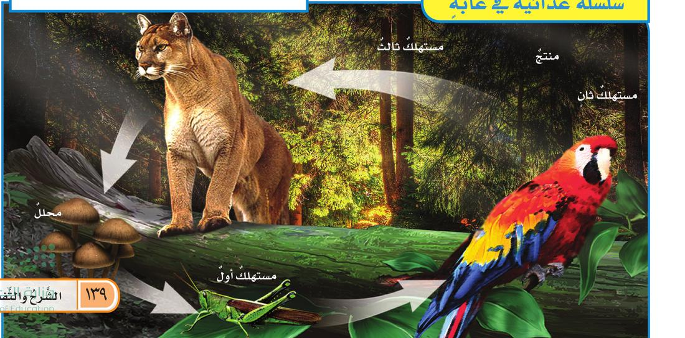
⚠️ فخ في الاختبار
السهم يتجه من المأكول إلى الآكل، أي في اتجاه انتقال الطاقة.
حشرات ← طيور تعني: الطيور تأكل الحشرات، لا العكس.
حشرات ← طيور تعني: الطيور تأكل الحشرات، لا العكس.
✍️ حلّ «أقرأ الشكل»اضغطي لتري الإجابة
الحلقة الثانية في سلسلة الغابة هي المستهلك الأول: الحشرة التي تأكل النبات.
ص١٤٠ · ما الشبكات الغذائية؟

💡 الزبدة
الشبكة الغذائية = عدة سلاسل غذائية متداخلة.
هي أدق من السلسلة؛ لأن معظم الحيوانات تأكل أكثر من نوع.
هي أدق من السلسلة؛ لأن معظم الحيوانات تأكل أكثر من نوع.
ص١٤٠ · ما الشبكات الغذائية؟
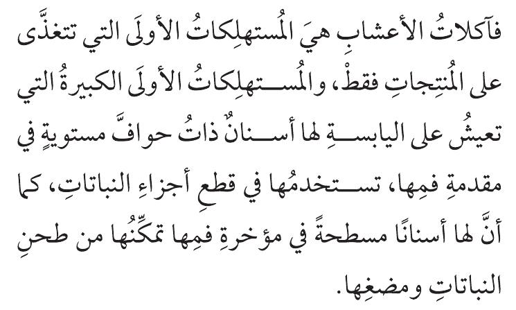
🔍 توضيح: أسنان آكلات الأعشاب
آكلات الأعشاب مستهلكات أولى. أسنانها الأمامية حادة لقطع النبات، والخلفية مسطحة لطحنه ومضغه.
ص١٤٠ · ما الشبكات الغذائية؟


💡 الزبدة
آكلات اللحوم مستهلكات ثانية وثالثة، تمزق فريستها بالأنياب والقواطع الحادة أو بالمناقير.
ص١٤٠ · ما الشبكات الغذائية؟
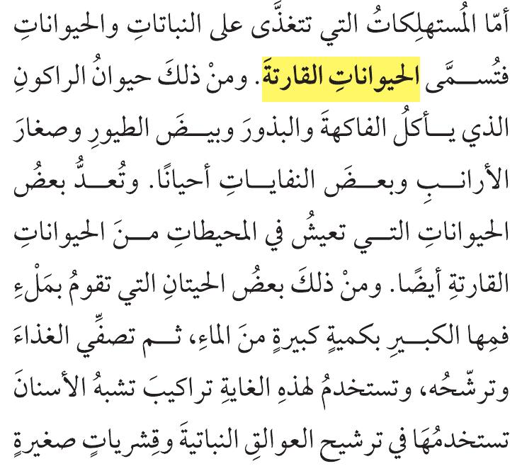
⚖️ انتبهي للفرق
| آكلات أعشاب | آكلات لحوم | قارتة |
|---|---|---|
| نباتات فقط | حيوانات | نباتات وحيوانات |
| المواشي، الفيلة | الثعلب، النسر | الراكون |
🔍 توضيح
بعض الحيتان قارتة: تأخذ ماءً كثيرًا في فمها، ثم تصفّيه بتراكيب تشبه الأسنان، فيبقى فيها العوالق والقشريات الصغيرة.
ص١٤٠ · ما الشبكات الغذائية؟
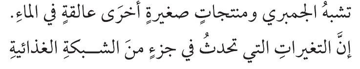
💡 الزبدة
أي تغيّر في جزء من الشبكة يؤثر غالبًا في بقية أجزائها.
ص١٤٠ · ما الشبكات الغذائية؟
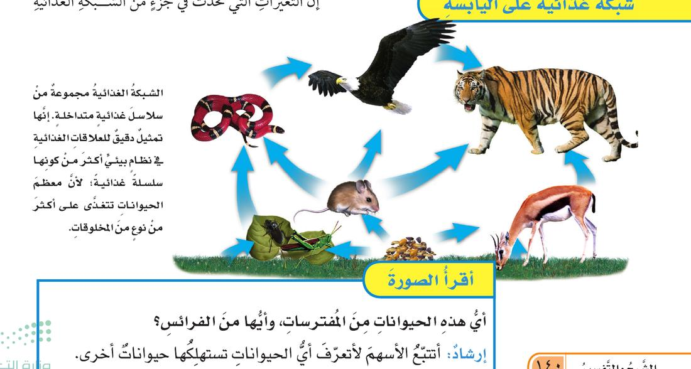
✍️ حلّ «أقرأ الصورة»اضغطي لتري الإجابة
المفترس: الحيوان الذي تصل إليه الأسهم من حيوانات أخرى، مثل الأفعى والنسر.
الفريسة: الحيوان الذي يخرج منه سهم إلى حيوان آخر، مثل الفأر والحشرات.
والأفعى مفترس للفأر، وفريسة للنسر.
الفريسة: الحيوان الذي يخرج منه سهم إلى حيوان آخر، مثل الفأر والحشرات.
والأفعى مفترس للفأر، وفريسة للنسر.
ص١٤١ · المفترسات والفرائس والكانسات

🔍 توضيح
النحلة 🐝 تجمع الرحيق فتحصل على غذائها، وتنقل حبوب اللقاح من زهرة إلى أخرى فتساعد النبات على التكاثر. كلاهما يستفيد.
ص١٤١ · المفترسات والفرائس والكانسات

💡 الزبدة
المفترس يصطاد مخلوقًا حيًا ويقتله ليأكله، والفريسة هي الحيوان الذي يُصطاد.
⚠️ فخ في الاختبار
الحيوان الواحد قد يكون مفترسًا وفريسة!
الأفعى تبتلع الفأر (مفترس)، ثم يصطادها النسر (فريسة).
الأفعى تبتلع الفأر (مفترس)، ثم يصطادها النسر (فريسة).
ص١٤١ · المفترسات والفرائس والكانسات


⚖️ انتبهي للفرق
| الكانس | المحلل |
|---|---|
| حيوان يأكل بقايا الحيوانات الميتة، ولا يصطاد | يحلل البقايا إلى مواد أبسط |
| بعض العقبان، الغربان | البكتيريا، الفطريات |
ص١٤١ · المفترسات والفرائس والكانسات

✍️ حلّ «أختبر نفسي»اضغطي لتري الإجابة
أتتبع: يتأثر من يأكل هذا النوع فيقلّ غذاؤه، ويتأثر ما يأكله هذا النوع فيزداد عدده.
التفكير الناقد: الحيوان القارت يأكل النباتات والحيوانات، فإذا نقص نوع وجد غذاءً آخر.
التفكير الناقد: الحيوان القارت يأكل النباتات والحيوانات، فإذا نقص نوع وجد غذاءً آخر.
ص١٤٢ · ما هرم الطاقة؟
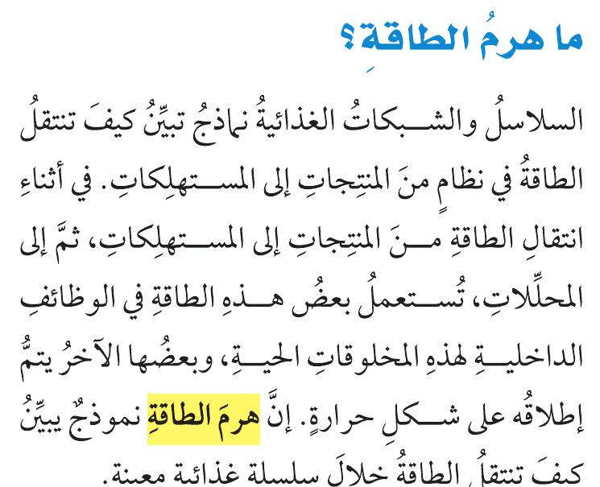
💡 الزبدة
هرم الطاقة نموذج يبيّن كيف تنتقل الطاقة خلال سلسلة غذائية.
جزء من الطاقة يُستعمل داخل المخلوق، وجزء يُفقد على شكل حرارة 🔥.
جزء من الطاقة يُستعمل داخل المخلوق، وجزء يُفقد على شكل حرارة 🔥.
ص١٤٢ · ما هرم الطاقة؟

💡 الزبدة
قاعدة الهرم = المنتجات؛ لأنها تدعم كل المخلوقات الأخرى. وفوقها المستهلكات.
⚠️ انتقال ١/١٠ من الطاقة 🔢
ينتقل ١/١٠ من الطاقة فقط إلى المستوى الذي يليه.
١٠٠٠٠←١٠٠٠←١٠٠←١٠
الحيلة: احذفي صفرًا واحدًا في كل صعود ⬆️.ص١٤٢ · ما هرم الطاقة؟

💡 الزبدة
لأن الطاقة تتناقص كلما صعدنا، تكون أعداد المنتجات أكبر من أعداد المستهلكات.
ص١٤٢ · ما هرم الطاقة؟
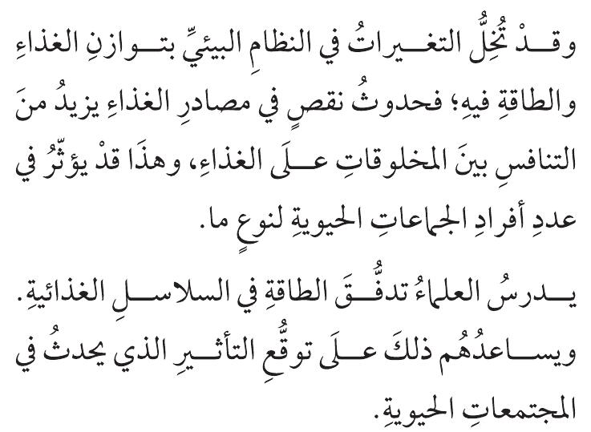
🔍 توضيح
إذا نقص الغذاء زاد التنافس بين المخلوقات عليه، فيقلّ عدد أفراد بعض الأنواع.
ص١٤٢ · ما هرم الطاقة؟
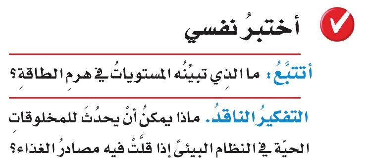
✍️ حلّ «أختبر نفسي»اضغطي لتري الإجابة
أتتبع: تبيّن كمية الطاقة التي تنتقل من مستوى إلى المستوى الذي يليه.
التفكير الناقد: يزداد التنافس على الغذاء، وقد يقلّ عدد أفراد بعض الأنواع.
التفكير الناقد: يزداد التنافس على الغذاء، وقد يقلّ عدد أفراد بعض الأنواع.
ص١٤٢ · ما هرم الطاقة؟

⚖️ انتبهي للفرق
| قاعدة الهرم | أعلى الهرم |
|---|---|
| المنتجات | المستهلكات |
| طاقة أكثر | طاقة أقل |
| أعداد أكبر | أعداد أقل |
📌 الخلاصة · خريطة المفاهيم
☀️ الشمسمصدر الطاقة الأول
⬇
🌿 المنتجاتتصنع غذاءها بالبناء الضوئي
نباتات · طحالب · عوالق نباتية
نباتات · طحالب · عوالق نباتية
⬇تأكلها
🐄 المستهلكاتأول ← ثانٍ ← ثالث
⬇بعد موتها
🍄 المحللاتتحلل البقايا وتعيد تدوير المواد
ديدان · بكتيريا · فطريات
ديدان · بكتيريا · فطريات
المستهلكات حسب غذائها
- آكلات أعشاب (مستهلك أول)
- آكلات لحوم (ثانٍ وثالث)
- قارتة: نبات وحيوان
حسب طريقة حصولها عليه
- مفترس: يصطاد ويقتل
- فريسة: يُصطاد
- كانس: يأكل البقايا
📌 الخلاصة · لا تخلطي بينها
| ⛓️ السلسلة | 🕸️ الشبكة | 🔺 الهرم | |
|---|---|---|---|
| ماذا يبيّن؟ | مسار انتقال الطاقة من مخلوق حي إلى آخر | تداخلات السلاسل الغذائية في نظام بيئي | كيف تنتقل الطاقة خلال سلسلة غذائية |
| تذكّري | تبدأ بمُنتِج | أدق؛ لأن معظم الحيوانات تتغذى على أكثر من نوع | المنتجات في القاعدة |
📌 الخلاصة · لا تخلطي بينها
| المفترس | الكانس | المحلل | |
|---|---|---|---|
| غذاؤه | مخلوقات حية يصطادها | بقايا الحيوانات الميتة | بقايا المخلوقات الميتة |
| هل يقتل؟ | نعم | لا | لا |
| أمثلة من الكتاب | الأفعى، النسر | بعض العقبان، الغربان | البكتيريا، الفطريات |
📌 الخلاصة · أهم النقاط
- مصدر الطاقة الأول هو الشمس، وتأخذها المنتجات لتصنع غذاءها.
- تنتقل الطاقة: منتج ← مستهلك أول ← مستهلك ثانٍ ← مستهلك ثالث، والمحللات تعيد تدوير المواد.
- السلسلة مسار واحد، والشبكة سلاسل متداخلة وهي أدق.
- المستهلكات: آكلات أعشاب، وآكلات لحوم، وقارتة. ومنها المفترس والكانس.
- في هرم الطاقة ينتقل ١/١٠ من الطاقة فقط إلى المستوى الذي يليه، لذلك المنتجات أكثر عددًا.
🧠 اختبري نفسك · ١ من ٤
في السلسلة: نباتات ← حشرات ← طيور تأكل الحشرات ← الأفعى، ما المستهلك الثاني؟
✅ الجوابفكّري ثم اضغطي
الطيور التي تأكل الحشرات؛ لأنها تأكل المستهلك الأول.
🧠 اختبري نفسك · ٢ من ٤
في مستوى المنتجات ٢٠٠٠٠ وحدة طاقة. كم يصل إلى المستهلك الأول؟ وكم يصل إلى المستهلك الثاني؟
✅ الجوابفكّري ثم اضغطي
المستهلك الأول ٢٠٠٠، والمستهلك الثاني ٢٠٠. (احذفي صفرًا في كل مستوى)
🧠 اختبري نفسك · ٣ من ٤
صوابٌ أم خطأ؟ الحيوان الكانس يصطاد فريسته ويقتلها.
✅ الجوابفكّري ثم اضغطي
خطأ؛ الكانس يأكل بقايا الحيوانات الميتة ولا يصطاد. الذي يصطاد هو المفترس.
🧠 اختبري نفسك · ٤ من ٤
لماذا تكون أعداد المنتجات أكبر من أعداد المستهلكات؟
✅ الجوابفكّري ثم اضغطي
لأن الطاقة تتناقص من مستوى إلى الذي يليه، فلا تكفي إلا أعدادًا أقل في المستويات العليا.
🌟
أحسنتِ!
أنهيتِ الدرس. ثبّتي ما تعلمتِه باللعب.
🎮 العبي ألعاب الدرس في «نجمات العلوم»🖨️ نسخة الطباعة A5 📚 دروس الكتاب